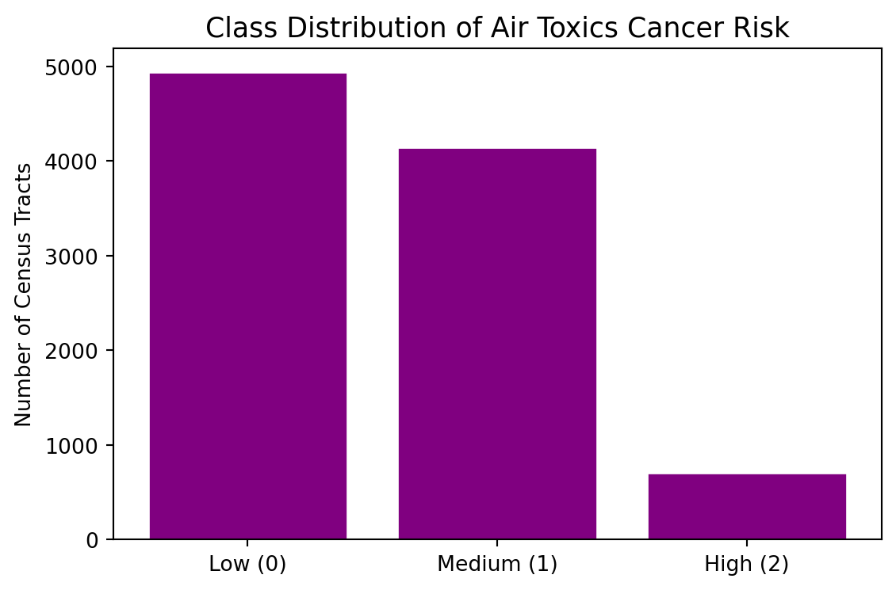

Download the lab template here and move to your eds232-labs repository.
Background
The CDC/ATSDR Environmental Justice Index (EJI) measures the cumulative environmental and social burdens faced by communities across the United States at the census-tract level. It combines three modules:
Environmental Burden Module (EBM): air quality, proximity to hazardous waste sites, impaired water bodies
Social Vulnerability Module (SVM): poverty, race/ethnicity, housing conditions, health insurance
Health Vulnerability Module (HVM): prevalence of asthma, cancer, diabetes, mental illness
Our response variable of interest, E_TOTCR, is the EPA-modeled lifetime cancer risk from inhalation of air toxics — the estimated probability that a resident exposed continuously over a lifetime will develop cancer from airborne chemicals alone.
Download the Data
Follow these instructions to obtain the data for this lab:
Each row is a U.S. census tract. The key columns used in this lab are:
Column
Description
E_TOTCR
Lifetime cancer risk from air toxics (EPA modeled)
EPL_TOTCR
National percentile rank of E_TOTCR
E_DSLPM
Ambient diesel particulate matter (μg/m³)
E_PM
Annual mean days above PM2.5 standard
E_NPL
% of tract within 1-mile of an EPA Superfund site
E_TRI
% within 1-mile of a Toxic Release Inventory facility
E_TSD
% within 1-mile of a hazardous waste TSD facility
E_RMP
% within 1-mile of an RMP chemical accident site
E_POV200
% of persons below 200% of the federal poverty level
E_MINRTY
% identifying as a racial/ethnic minority
Setup: Load Libraries and Read in Data
Run the cell below to load the EJI data, replace the EPA missing-value (-999) with NaN, and take a reproducible random sample of 10,000 tracts so that cross-validated KNN runs in a reasonable time.
Code
import pandas as pdimport numpy as npimport matplotlib.pyplot as pltfrom sklearn.model_selection import train_test_splitfrom sklearn.preprocessing import StandardScalerfrom sklearn.neighbors import KNeighborsClassifierfrom sklearn.metrics import ( accuracy_score, confusion_matrix, ConfusionMatrixDisplay, classification_report, precision_score, recall_score, f1_score)# Load and Replace -999 values with NAdf_raw = pd.read_csv('data/EJI_2024_United_States.csv')df_raw = df_raw.replace(-999, np.nan)# 10,000-tract sampledf = df_raw.sample(n=10_000, random_state=42).reset_index(drop=True)df.head(3)
STATEFP
COUNTYFP
TRACTCE
AFFGEOID
GEOID
GEOID_2020
COUNTY
StateDesc
STATEABBR
LOCATION
...
E_AIAN
NHPI
E_NHPI
TWOMORE
E_TWOMORE
OTHERRACE
E_OTHERRACE
Tribe_PCT_Tract
Tribe_Names
Tribe_Flag
0
72
21
31023
140000US72021031023
72021031023
72021031023
Bayamón Municipio
Puerto Rico
PR
Census Tract 310.23; Bayamón Municipio; Puerto...
...
NaN
NaN
NaN
NaN
NaN
NaN
NaN
0.000000
-999
NaN
1
51
810
46400
140000US51810046400
51810046400
51810046400
Virginia Beach city
Virginia
VA
Census Tract 464; Virginia Beach city; Virginia
...
0.2
0.0
0.0
125.0
2.2
0.0
0.0
0.000000
-999
NaN
2
30
47
940600
140000US30047940600
30047940600
30047940600
Lake County
Montana
MT
Census Tract 9406; Lake County; Montana
...
26.6
6.0
0.1
420.0
8.6
3.0
0.1
99.994102
Flathead Reservation
1.0
3 rows × 170 columns
Step 1: Create the Target Variable and Explore the Data
We classify each census tract into one of three cancer risk categories based on its national percentile rank for air toxics cancer risk (EPL_TOTCR):
Class
Label
EPL_TOTCR range
0
Low
< 0.33
1
Medium
0.33 – 0.67
2
High
≥ 0.67
Create a column called risk_class that assigns each row the appropriate class label.
Plot a bar chart showing the count of tracts in each class to visualize any potential class imbalance.
Code
def make_risk_class(epl):if pd.isna(epl):return np.nanelif epl <0.33:return0elif epl <0.67:return1else:return2df['risk_class'] = df['EPL_TOTCR'].apply(make_risk_class)counts = df['risk_class'].value_counts().sort_index()labels = ['Low (0)', 'Medium (1)', 'High (2)']fig, ax = plt.subplots(figsize=(6, 4))ax.bar(labels, counts.values, color="purple", edgecolor='white')ax.set_title('Class Distribution of Air Toxics Cancer Risk', fontsize=13)ax.set_ylabel('Number of Census Tracts')plt.tight_layout()plt.show()print('\nClass counts:\n', counts.rename({0: 'Low', 1: 'Medium', 2: 'High'}))

Class counts:
risk_class
Low 4942
Medium 4148
High 702
Name: count, dtype: int64
Why Scaling Matters for KNN
KNN classifies a new point by finding its k nearest training neighbors in feature space, often using Euclidean distance.
If one feature spans 0–100 while another spans 0–1, the large-range feature will dominate the distance calculation — even if the small-range feature is highly predictive. Standardizing each feature levels the playing field.
Let’s take a look at the range of our observations for our 8 different features.
Code
FEATURES = ['E_DSLPM', 'E_PM', 'E_NPL', 'E_TRI', 'E_TSD', 'E_RMP', 'E_POV200', 'E_MINRTY']for f in FEATURES: lo = df[f].min() hi = df[f].max() rng = hi - loprint(f"{f:<14}{lo:>10.4f}{hi:>10.4f}{rng:>10.4f}")
Training set : 6,815 tracts
Test set : 2,921 tracts
Scaled vs. Unscaled KNN
The cell below fits the same KNN model (k = 5) twice — once on raw features, once on scaled features — and prints both test accuracies. Do you see an accuracy boost from scaling?
Code
# KNN on UNSCALED featuresknn_raw = KNeighborsClassifier(n_neighbors=5)knn_raw.fit(X_train, y_train)acc_raw = accuracy_score(y_test, knn_raw.predict(X_test))# KNN on SCALED featuresknn_scaled = KNeighborsClassifier(n_neighbors=5)knn_scaled.fit(X_train_s, y_train)acc_scaled = accuracy_score(y_test, knn_scaled.predict(X_test_s))print(f'Test accuracy — unscaled features : {acc_raw:.4f}')print(f'Test accuracy — scaled features : {acc_scaled:.4f}')print(f'Accuracy gain from scaling : +{acc_scaled - acc_raw:.4f}')
Test accuracy — unscaled features : 0.5430
Test accuracy — scaled features : 0.6340
Accuracy gain from scaling : +0.0911
Step 3: Fit a K-Nearest Neighbors Classifier (k = 3)
A confusion matrix shows how predictions map to true labels. Each row is the true class; each column is the predicted class. The diagonal entries are correct predictions; off-diagonal entries are mistakes.
Compute the confusion matrix for knn3 using y_test and y_pred_knn3.
Display it with ConfusionMatrixDisplay, using display_labels=['Low','Medium','High'].
Step 5: Manually Calculate Accuracy, Precision, Recall, and F₁
Accuracy alone can be misleading when classes are imbalanced or when certain errors matter more than others. We’ll calculate all four metrics by hand from the confusion matrix so you can see exactly what each one is measuring.
\[\text{Accuracy} = \frac{\text{sum of diagonal}}{\text{sum of all cells}} = \frac{TP_{Low} + TP_{Med} + TP_{High}}{N}\]
Step 6: Verify with Scikit-learn’s Built-in Metrics
Now that you’ve computed everything by hand, use scikit-learn’s built-in functions to verify your results. The functions below accept y_test and y_pred_knn3 directly.